Neuropatía diabéticaPublicado noviembre 2026 · 6 min de lectura
Tengo neuropatía diabética. Pasé de organizar el día alrededor del ardor en los pies a olvidarme de ellos a la noche.
Esperaba que la respuesta fueran más pastillas, plantillas a medida o aprender a vivir con esto. Nunca pensé que fuera una plantilla de $30.000 que entra en los zapatos que ya tenía y que parece… bueno, nada especial. Pero después de 90 días, mis días son otros. Esto es lo que ayudó de verdad.
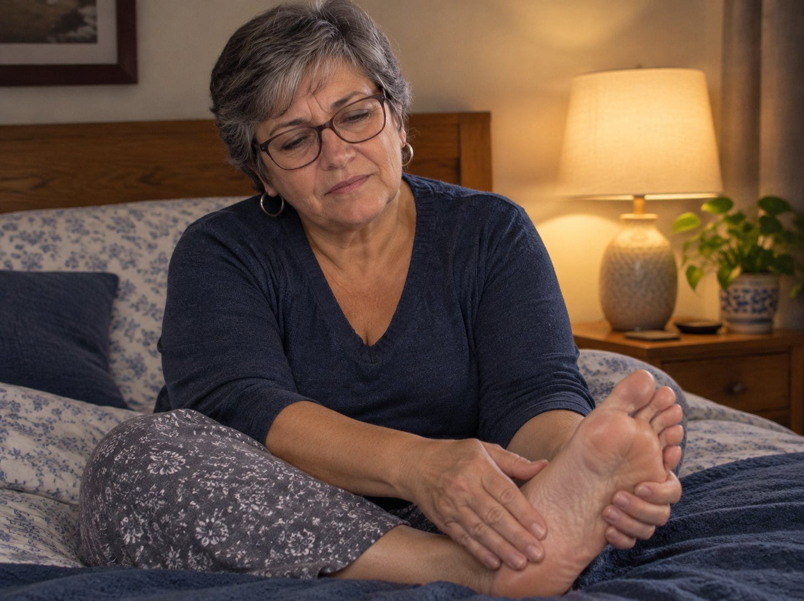
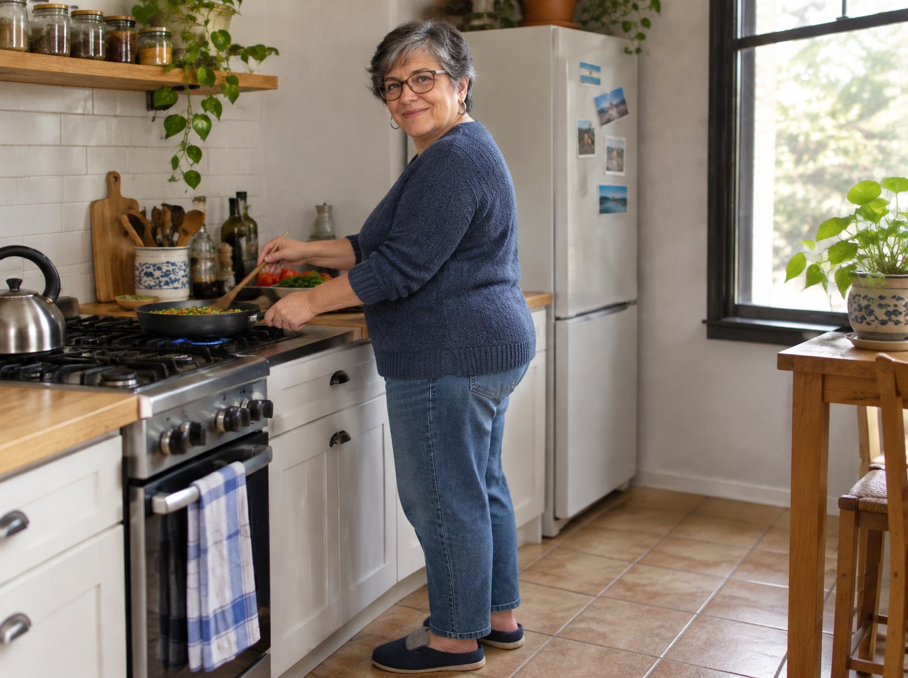
Izquierda: mis noches hasta hace tres meses. Derecha: mi cocina, piso de cerámica, donde paso medio día.
Si a la noche los pies te arden, te hormiguean o se te duermen
Casi todas las plantillas son una lámina de espuma muerta. Se sienten bien en el local, se aplastan en semanas y dejan que tus pies absorban cada paso solos.
Para pies calientes y sensibles, eso son miles de apoyos duros y sin protección por día.
Y cuando tus pies se comen esa paliza todo el día, la noche es cuando te lo hacen saber.
Yo ya estaba cansada de apostar plata a aparatos. Tenía que haber una respuesta más simple.
Si te suena, esta nota es para vos
- Ardor en la planta a la noche, en la cama
- Hormigueo, pinchazos, “pies dormidos”
- Pies agotados a media tarde
- Cada paso más duro sobre cerámica y cemento
- Miedo a caminar más de unas cuadras
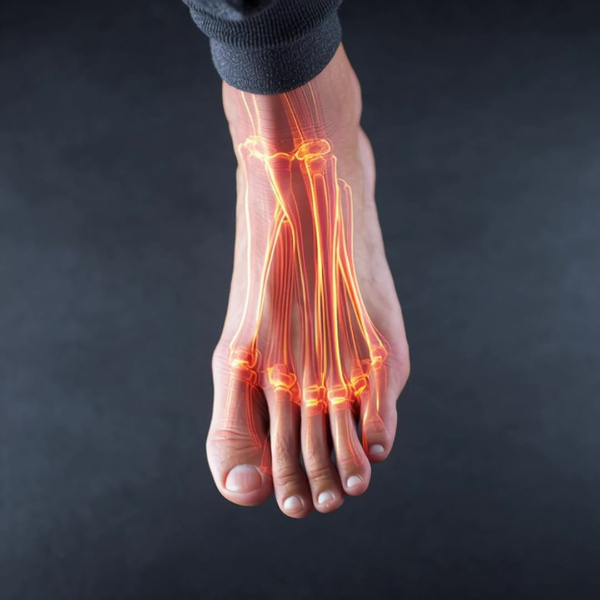
Lo que descubrí sobre las plantillas de masaje
Buscando alternativas me crucé con Balox, una empresa argentina que llegó en silencio a más de 100.000 pares vendidos con una sola plantilla de masaje, la Cloud-Comfy 5D.
Lo que me llamó la atención no fue la promesa de comodidad sino la lógica del diseño: una superficie de relieves que reparte la presión en toda la planta, en vez de dejarla concentrada en dos puntos.
Lo primero que noté fue lo fácil que fue el cambio. Tengo la espalda hecha pedazos y reemplazar todos mis zapatos nunca fue una opción realista.
Entran en el calzado que ya tenés
- Las zapatillas de siempre, las que ya cedieron donde tienen que ceder
- Las pantuflas cerradas para el piso de la cocina
- Los zapatos de salir que no pensás cambiar
Cómo se colocan (un minuto por par)
No van encima de la plantilla de fábrica: van en su lugar.
- 1
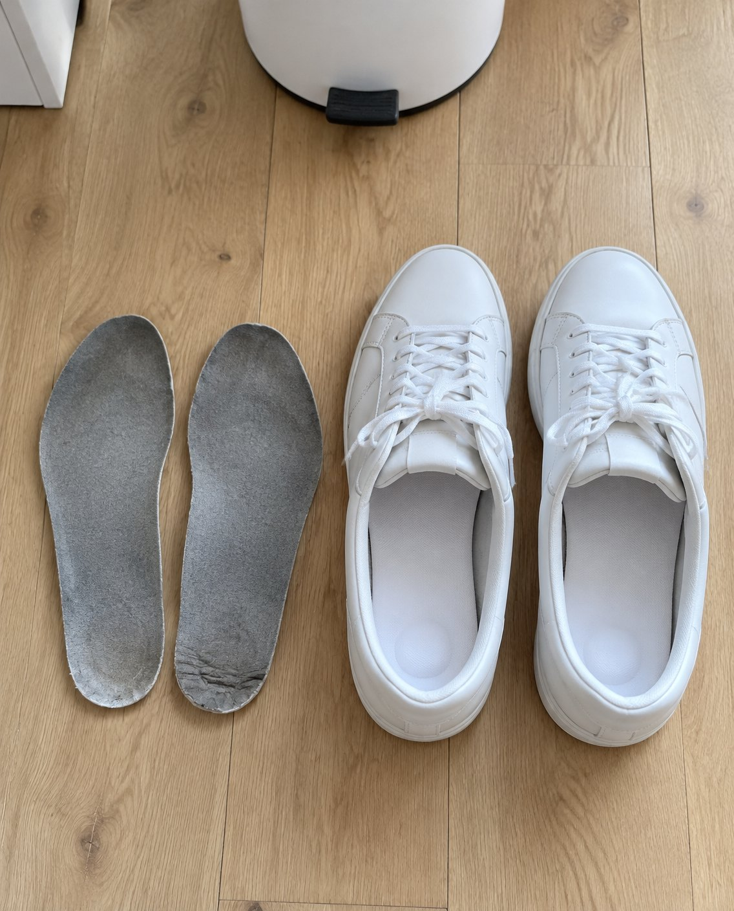
Sacá la de fábrica
La lámina fina que trae el calzado. Esa es la que te estaba fallando.
- 2
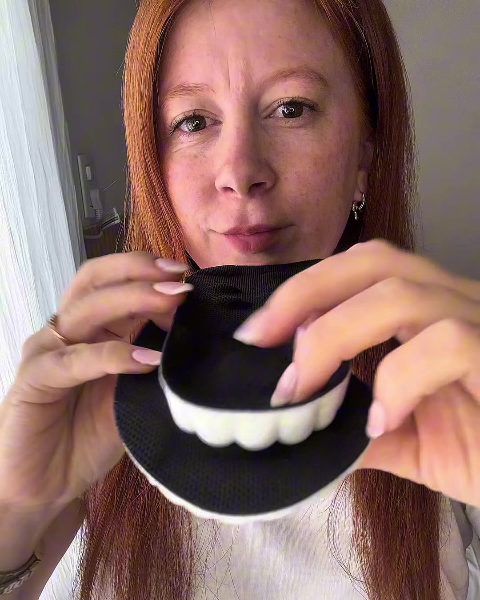
Recortá la Cloud si hace falta
Usá la vieja de molde y seguí las guías del reverso. Solo la punta.
- 3
Ponela y listo
Entra en la zapatilla, el zapato de trabajo y la bota que ya usás.
La plantilla vieja va a la basura. No la vas a extrañar.
Lo que me dio confianza para probarlas
No necesitás una receta para saber que tus pies merecen algo mejor que espuma muerta. Pero ayuda cuando el diseño sigue lo que los podólogos piden para un pie con neuropatía:
Qué recomiendan los podólogos para pies con neuropatía
- Repartir la presión en toda la planta, no concentrarla
- Sostener el arco en vez de dejarlo colapsar
- Sin costuras ni bordes duros que rocen sin que lo sientas
- Base firme: un pie que se hunde en espuma es un pie menos estable
Si querés plantillas que funcionen con tu día (no con una sesión)
Lo que las diferencia no es la idea del masaje. Es que resolvieron lo práctico.
Voy a ser honesta: todo lo “terapéutico” que había visto parecía… clínico. Algo para usar sentada quince minutos con un cable.
Estas trabajan en silencio durante todo el día:
Dónde las uso
- Haciendo los mandados
- Las horas de pie en la cocina
- Paseando a la perra a la tarde (volví a hacerlo)
Sin sesiones. Sin pilas. Sin acordarse.
Solo relieves que presionan y sueltan con cada paso, y una base que no deja que la planta se coma el golpe.
Lo que más me sorprendió es que la planta termina el día menos caliente: la presión repartida hace que la sangre circule mejor, y eso en un pie con neuropatía se siente.
★★★★★ 4,8/5 · +100.000 pares · Garantía de 60 días
Mis resultados
Lo noté en la primera caminata. El ardor de la noche al que ya estaba resignada llegó mucho más suave, y mis pies dejaron de ser lo más ruidoso del día.
A las dos semanas volví a pasear a la perra. Al mes, hice los mandados a pie, seis cuadras, sin buscar dónde sentarme.
¿Se me fue la neuropatía? No. Eso lo trato con mi médica. Pero el día se volvió mío otra vez, y eso es exactamente lo que buscaba.
Semana a semana
- Día 12 horas, como dice el fabricante
Raro al principio, como si el pie notara algo nuevo. A la noche, el ardor llegó más suave.
- Semana 2Volví a pasear a la perra
Doce cuadras. Me senté al volver, pero por costumbre, no por los pies.
- Mes 1Mandados a pie
Seis cuadras de ida y vuelta con la bolsa. Sin contar las cuadras.
- Día 90Las plantillas siguen igual que la primera semana
Y ya compré el pack para las zapatillas, las pantuflas y los zapatos de salir.
Mi evaluación honesta
Las veía en todos lados en Facebook y era bastante escéptica. Las reseñas parecían demasiado buenas.
Después de 90 días de uso diario, creo que son una respuesta inteligente a un problema de todos los días. No se sienten solo más blandas: cambian lo que tus pies pasaron al final del día.
Y acá viene lo mejor: son casi sospechosamente baratas. Cuando sumé las cremas, los suplementos con nombre raro y el masajeador de $90.000 que vive en un cajón, los $30.000 ni se sintieron.
Comparado con todo lo que había probado
| Cloud-Comfy 5D | Masajeador eléctrico | Cremas y suplementos | |
|---|---|---|---|
| Costo | $14.990 a $29.990 por par | $90.000 o más | Recurrente, todos los meses |
| Entra en el calzado que ya uso | ✓ | ✗ | – |
| Alivio durante todo el día | ✓ | ~ | ~ |
| Suave con pies sensibles | ✓ | ~ | ✓ |
| Garantía sin riesgo | 60 días | ✗ | ✗ |
Precios de referencia en Argentina, noviembre 2026. Una plantilla no trata la neuropatía ni sus causas.
Lo que dicen otros con pies sensibles
Reseñas de compradores, tal cual las escribieron en la tienda oficial de la marca.
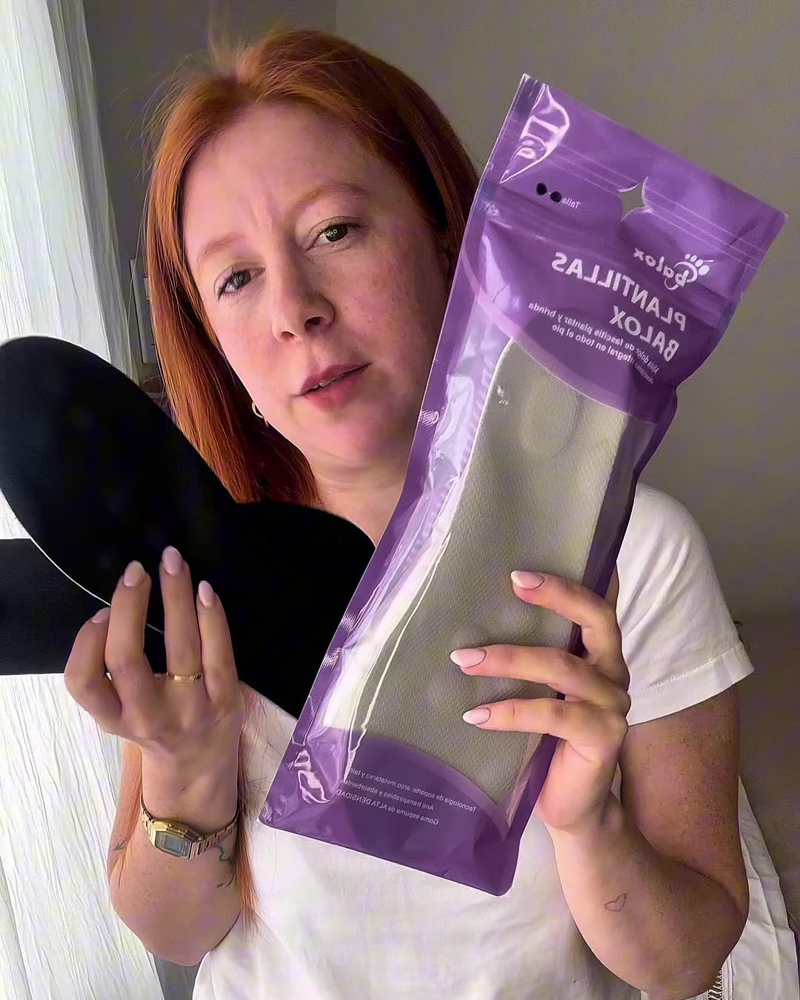
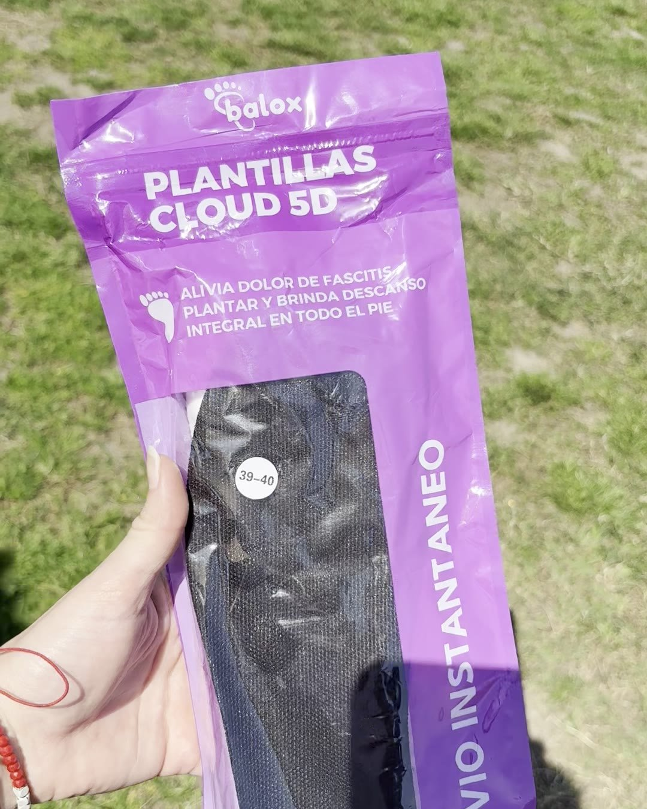
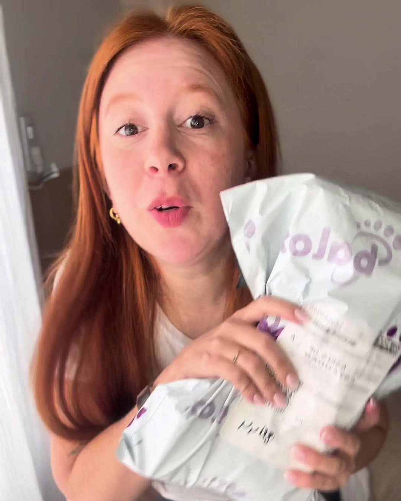
“Son muy buenas. Me permiten caminar o estar parada un poco más. Sufro de neuropatía y necesito un calzado que me reciba bien el pie y amortigüe mi andar. Las recomiendo, cómprenlas, son muy buenas.”
“Hace años tengo problemas al pisar (post operación). Por lo general las plantillas no me solían dar alivio pero posta que estas sí.”
“Me han resultado muy útiles, pude caminar más de 10 km sin molestias y sin transpiración.”
“Desde el primer día noté el cambio, son mágicas. Se me fue el dolor de talón y rodillas. He vuelto a caminar y hacer todo lo que me gusta.”
La solución que encontré
Plantillas Cloud-Comfy 5D
Las vende Balox, empresa argentina especializada en productos para el pie, con más de 100.000 pares vendidos, 4,8 de puntuación y registro INPI. Recomendadas por podólogos para pies sensibles.
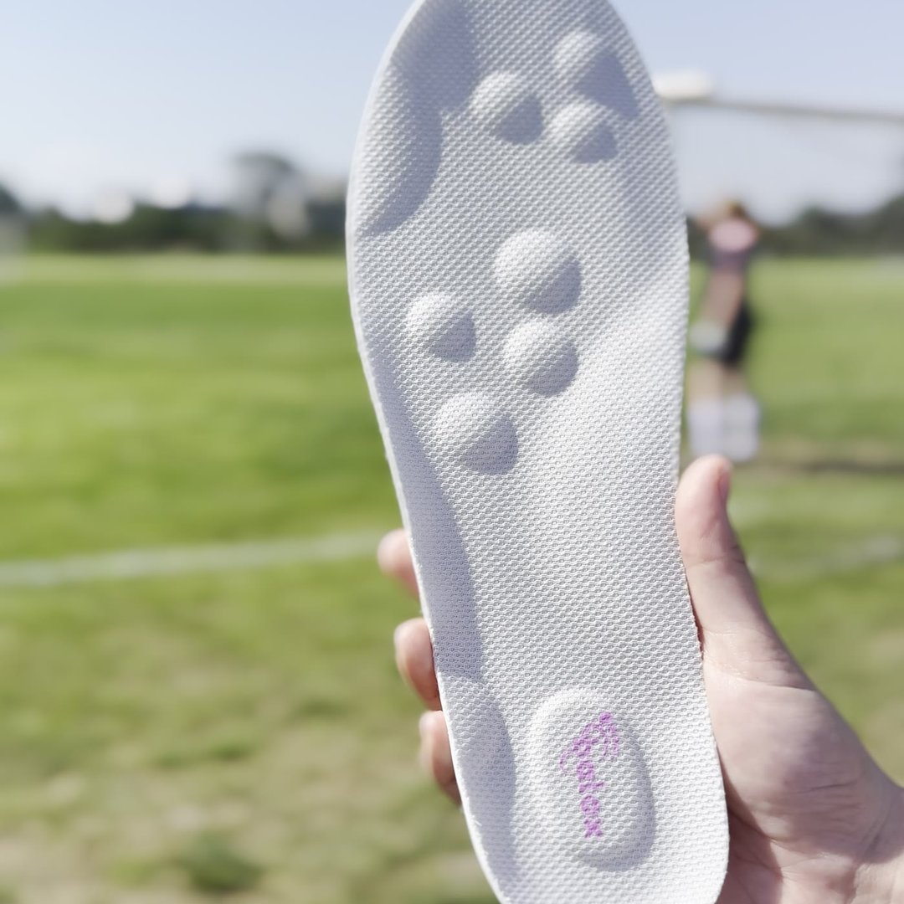
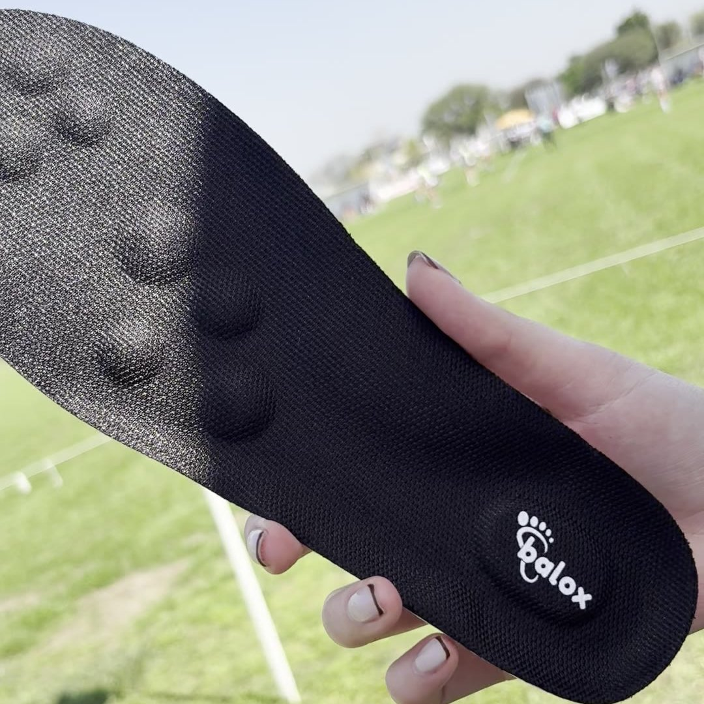
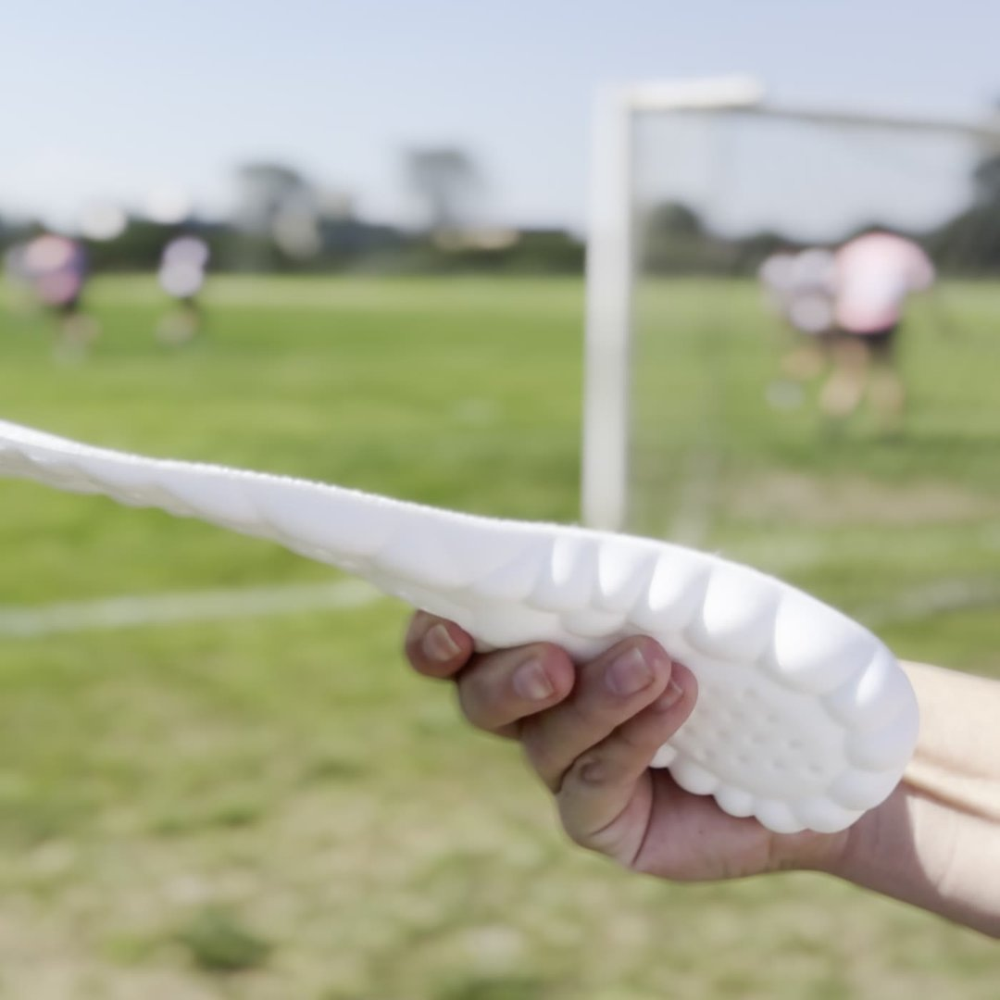
- Base de doble densidadFirme abajo, suave arriba: no se aplasta en semanas como el gel.
- Soporte de arcoMantiene el pie en posición neutra y descarga la fascia.
- Copa de talónConcentra el tejido graso bajo el hueso, donde más duele.
- Relieves de masaje 5DSe hunden y vuelven con cada paso: reparten el apoyo.
- Memoria térmicaSe adapta a tu pie con el calor; vuelve a su forma al sacarla.
- Recortable · 35 a 46Entra en zapatillas, zapatos de trabajo y botas.
Las preguntas que me hice antes de comprar (y mis respuestas honestas)
¿Los relieves me van a molestar con los pies sensibles?+
Era mi miedo más grande. Respuesta honesta: el primer día se sienten raros, como si el pie notara algo nuevo. Al tercer día dejé de registrarlos. Los relieves están debajo de una capa suave, es presión suave, no pinchazos. Y la garantía cubre pies más quisquillosos que los míos.
Tengo diabetes, ¿puedo usarlas?+
Yo las uso con el visto bueno de mi médica. Lo que ella me pidió: empezar de a poco, revisar la piel de los pies todos los días la primera semana y no usar nada que roce. Hacé lo mismo. Si no te funcionan, las devolvés dentro de los 60 días.
¿Entran de verdad en todos mis zapatos?+
Se recortan y no van pegadas, así que técnicamente un par sirve para varios. Pero cambiarlas cada mañana cansa. Mi recomendación: un par por cada calzado que uses de verdad. Yo armé las zapatillas, las pantuflas y los zapatos de salir una vez y no pensé más.
¿Y el precio?+
Cuando calculé lo que gasté en cremas, suplementos y el masajeador en dos meses, ya era más que el pack de 5. La mejor inversión que hice este año.
¿Se aplastan como las otras?+
Acá es donde las baratas siempre me traicionaron, así que lo miré con lupa. La base es firme, no espuma: el fabricante habla de 12 a 18 meses de uso diario, y las reseñas de gente con meses de uso dicen “siguen como el primer día”.
¿Qué talle pido? ¿Y si estoy entre dos?+
Tu talle habitual. Vienen en rangos (35-36, 37-38, 39-40, 41-42, 43-44, 45-46) y se recortan siguiendo las guías del reverso. Si dudás, pedí el más grande. Si igual le errás, el cambio es gratis dentro de los 60 días.
¿Cuánto tarda en llegar?+
Sale del depósito en 24 a 48 horas hábiles. CABA y GBA, 24 a 72 horas; interior, 3 a 6 días hábiles. Desde 4 pares el envío es gratis a todo el país.
La solución que encontré
Se venden en la web del fabricante. Hoy el par está con 60% de descuento sobre el precio de lista y en el pack de 5 (uno por calzado, o para compartir con alguien de la familia que también tenga diabetes) baja a $14.990 cada uno.
Lo que recibís:
- Relieves de masaje 5D que presionan y sueltan con cada paso
- Soporte de arco que no se hunde
- Copa de talón y base de doble densidad
- Memoria térmica: toman la forma de tu pie
- Garantía de 60 días: si no te funcionan, te devuelven la plata
- Cambio de talle gratis · Envío a todo el país
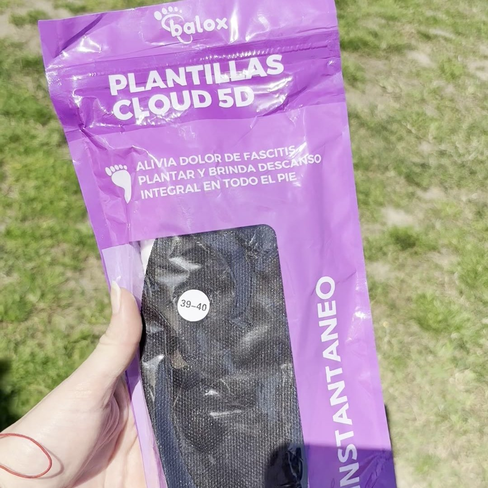
Plantillas Cloud-Comfy 5D
Talles 35 a 46 · Gris o negro · Recortables
$75.900$29.990por par · 3 pares a $21.990 c/u · 5 pares a $14.990 c/u
- Envío gratis comprando 4 pares o más (a todo el país)
- 3 cuotas sin interés
- Descuento extra pagando por transferencia bancaria
- Cambio de talle gratis durante 60 días, sin preguntas
- Garantía de 60 días: si no te funcionan, te devuelven el dinero
- De regalo: e-book de ejercicios para el dolor plantar, escrito por un podólogo de la UBA
🔥 Quedan — pares en el depósito del fabricante (reponen cada semana)
La oferta de hoy termina en --:--:--
Al entrar, elegí la cantidad de pares (el descuento se aplica solo), después el talle y el color de cada par. El descuento extra se aplica eligiendo transferencia al pagar.
Garantía de 60 días · Cambio de talle gratis · 3 cuotas sin interés